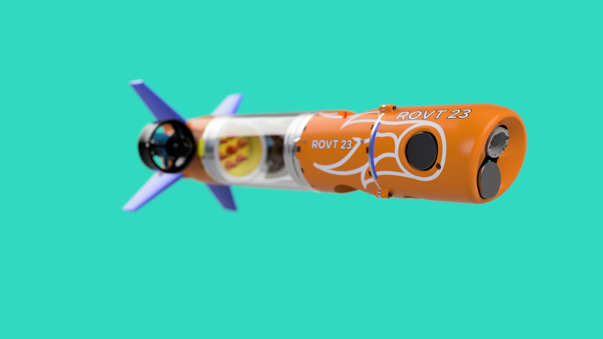
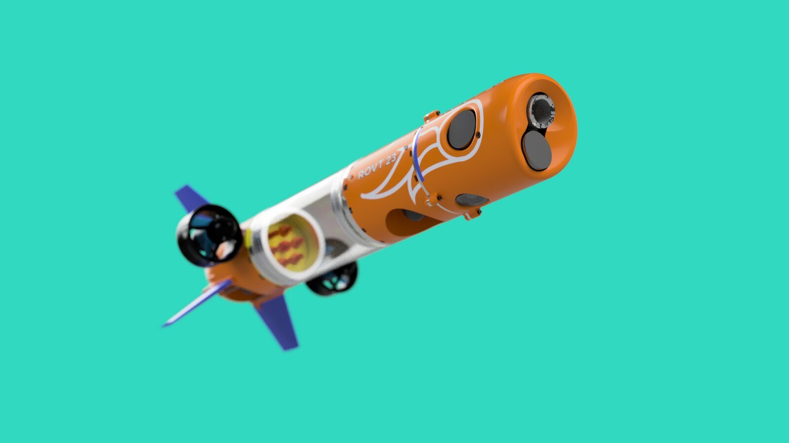
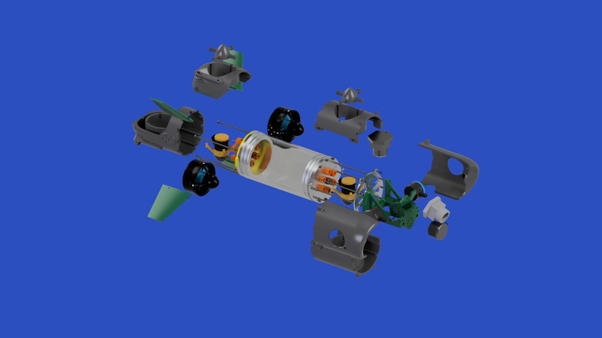
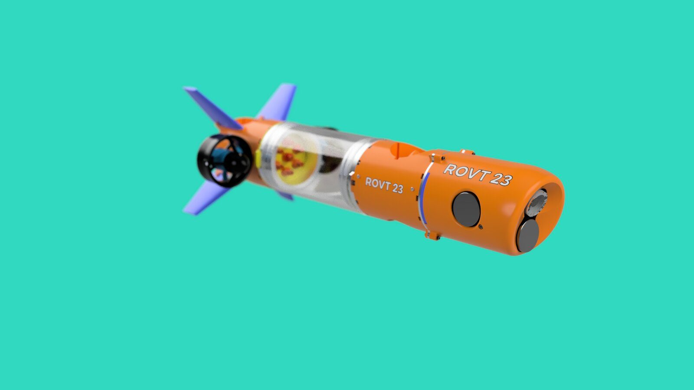

Pioneer MKII — Underwater Explorer, Nose Module Design
A structure that holds the sensor firmly and a shell that passes through water cleanly had to be designed at the same time.
İki çelişen ihtiyaç, tek modül
Pioneer MKII, kör dalış yapabilen; sensörlerle su altı görüntüleme ve harita çıkarma gibi görevleri hem uzaktan kumanda hem otonom modda yürüten bir keşif aracı. Aracın baş modülü, birbiriyle gerilim halindeki iki ihtiyacı aynı anda karşılamak zorundaydı:
- Sonar, kamera ve sensör bileşenlerinin su altı titreşimi ve basıncı altında sabit ve doğru konumda kalması
- Gövdenin düşük sürükleme katsayılı bir formda ilerlerken, aynı sensörlerin dış ortamı optik/akustik olarak algılayabilmesi
Bu iki gereksinim çoğu zaman birbirine zıt yönde form baskısı uygular: yapısal sağlamlık kapalı, kalın kesitler ister; sensör görüşü açık, ince kesitler ister.
Referans ve gereksinim toplama
Takım içi teknik toplantılarda sensör paketinin (sonar + kamera) fiziksel ölçüleri, kablolama gereksinimleri ve görüş açısı kısıtları netleştirildi. Mevcut ROV baş modülü tasarımları referans alınarak, hangi form dilinin hem üretilebilir hem de yeterince hidrodinamik olduğuna dair bir kısa liste çıkarıldı.
Neyin doğru olduğuna nasıl karar verdik
| Kriter | Gereksinim |
|---|---|
| Yapısal sabitlik | Sensör paketi, su altı titreşiminde konumunu korumalı |
| Hidrodinamik | Düşük sürükleme, akışkan geçiş formu |
| Sensör görüşü | Optik/akustik algı için engelsiz alan |
| Bakım erişimi | Braket sökülüp takılabilmeli |
| Görünürlük/güvenlik | Su altında fark edilir renk |
| Üretim yöntemi | FDM 3D baskıyla üretilebilir olmalı |
Torpido formuna neden karar verildi
Küt ve konik burun formları arasında değerlendirme yapıldı. Konik/torpido formu, hem sürükleme katsayısı hem de sensörlerin ileri yönde engelsiz görüş açısı için daha uygun bulundu. Kanatçık (fin) yerleşimi, aracın su altında yön stabilitesini desteklemesi için gövdenin arka ucuna, simetrik şekilde konumlandırıldı.


El eskizinden CAD'e geçiş
Bu proje form kararlarının büyük kısmını doğrudan CAD ortamında iteratif olarak aldı; ayrı bir el eskiz seti bu vaka analizine eklenecek şekilde arşivlenmedi.
Form ve içi birlikte modellemek
Dış kabuk ve iç braket, birbirini kısıtlayan iki parça olarak paralel geliştirildi — iç bileşenlerin yerleşimi değiştikçe dış form da yeniden şekillendi. Süreç, üretim öncesi montaj mantığını doğrulamak için patlamış görünüm (exploded view) modellemesiyle desteklendi.


İç tutucu braket
Sonar, kamera ve sensör bileşenlerini tutan iç braket, iki gereksinimi aynı anda karşılayacak şekilde tasarlandı: bileşenleri sıkıca sabitlemek ve bakım için sökülebilir olmak. Braket, gövdenin iç silindirine oturan, modüler bir alt yapı olarak kuruldu.

Dış kabuk tarafında ise gövde, sensörlerin görüş hattını kesmeyecek şekilde açık bölgeler bırakılarak şekillendirildi — kesit kalınlığı, yapısal sağlamlık ile açıklık ihtiyacı arasında noktasal olarak ayarlandı.

Üretim kısıtı, tasarım kararına dönüştü
Turuncu renk, su altında görünürlük ve güvenlik için bilinçli bir tasarım kararıydı. Ancak üretim aşamasında TEKNOFEST'e yetişme baskısı nedeniyle, elimizdeki FDM filamentiyle devam etmek zorunda kaldık — nihai fiziksel prototip farklı bir renkte üretildi.
Montaj için braket, elle sökülüp takılabilecek şekilde modüler tutuldu (DFA) — sensör değişimi veya bakım gerektiğinde tüm gövdenin açılmasına gerek kalmıyor.


FDM 3D baskı ile fiziksel doğrulama
Tasarım, FDM 3D baskı ile üretildi ve gerçek elektronik/sensör bileşenleriyle monte edildi.

Havuz testi
Araç, gerçek havuz koşullarında test edildi — hem hareket kararlılığı hem de sensör paketinin fiziksel bütünlüğü doğrulandı.


Sınırlı ama gerçek bir geri bildirim döngüsü
Renk kararı (DFM bölümünde anlatılan) bu projenin en somut iterasyon örneği. Diğer geometrik revizyonlar CAD aşamasında, fiziksel baskıya geçmeden önce yapıldı — bu nedenle çok sayıda fiziksel prototip iterasyonu değil, tek, doğrulanmış bir üretim turu oldu.
Sonuç



TEKNOFEST — Dizayn ve Sunum Ödülü
Genel sıralamada derece alınmasa da, Pioneer MKII TEKNOFEST'te Dizayn ve Sunum kategorisinde ödüllendirildi — tam olarak bu vaka analizinin öne çıkardığı yetkinlikle örtüşen bir sonuç: form, mühendislik zarafeti ve sunum bütünlüğü.